01 · 汽车、卡车与公路机动车辆 (Cars, Trucks & Motor Vehicles)
| 单词 (英 / 法性数完整形态) | 音标 (英 / 法 IPA) | 中文释义 | 英文定义 (WordNet) | 词频 | 实物配图 |
|---|---|---|---|---|---|
| taxila fiacren.f.🇬🇧 taxi | /'tæksi//fjakʁ/ | n. 出租车 | a car driven by a person whose job is to take passengers where they want to go in exchange for money | 4.19 | |
| motorcyclela moton.f.🇬🇧 motorcycle | /'mәutәsaikl//mɔto/ | n. 摩托车 | a motor vehicle with two wheels and a strong frame | 4.07 |  |
| ambulancel'ambulancen.f.🇬🇧 ambulance | /'æmbjulәns//ɑ̃bylɑ̃s/ | n. 救护车 | a vehicle that takes people to and from hospitals | 4.06 | |
| automobilel'auton.m.🇬🇧 automobile | /'ɒ:tәmәbi:l//oto/ | n. 汽车 | a motor vehicle with four wheels; usually propelled by an internal combustion engine | 3.94 |  |
| pickup truck复合词le sutn.m.🇬🇧 pickup truck | /ˈpɪkˌʌp trʌk//sy/ | n. 敞蓬小型载货卡车 | a light truck with an open body and low sides and a tailboard | 3.79 | 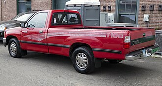 |
| jeeple jeepn.m.🇬🇧 jeep | /dʒi:p//dʒip/ | n. 吉普车 | a car suitable for traveling over rough terrain | 3.72 | 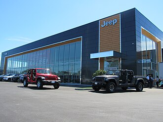 |
| tow car复合词le camion de remorquagen.m.🇬🇧 tow car | /təu kɑ://kamjɔ̃ də ʁəmɔʁkaʒ/ | 救援车辆 | a truck equipped to hoist and pull wrecked cars (or to remove cars from no-parking zones) | 3.71 | 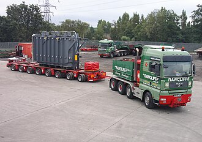 |
| patrol wagon复合词le panier à saladen.m.🇬🇧 patrol wagon | /pә'trәul 'wægәn//panje a salad/ | [法] 警车, 囚车 | van used by police to transport prisoners | 3.7 | |
| tow truck复合词le camion de remorquagen.m.🇬🇧 tow truck | /tәu trʌk//kamjɔ̃ də ʁəmɔʁkaʒ/ | 牵引者, 拖车 | a truck equipped to hoist and pull wrecked cars (or to remove cars from no-parking zones) | 3.67 | 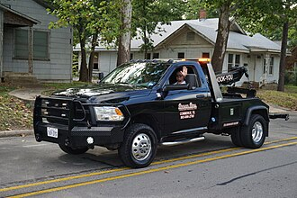 |
| tractor trailer复合词la faux bourdonn.f.🇬🇧 tractor trailer | /ˈtræktə ˈtreɪlə//fo buʁdɔ̃/ | 拖拉机拖车，拖拉机挂车 | a truck consisting of a tractor and trailer together | 3.67 |  |
| panda car复合词l'auton.m.🇬🇧 panda car | /ˈpændə kɑ://oto/ | n. <英>在住宅区巡逻的小型警车 | a police cruiser | 3.64 | 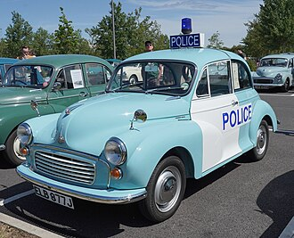 |
| convertible兼类词la décapotablen.f.🇬🇧 convertible | /kәn'vә:tәbl//dekapɔtabl/ | n. 有活动篷的汽车 | a car that has top that can be folded or removed | 3.55 | 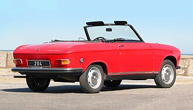 |
| sedanla berlinen.f.🇬🇧 sedan | /si'dæn//bɛʁlin/ | n. 轿车, 轿子 | a car that is closed and that has front and rear seats and two or four doors | 3.55 | 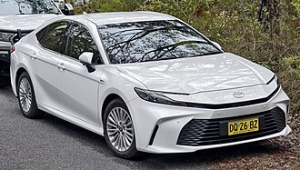 |
| cruiserle croiseurn.m.🇬🇧 cruiser | /'kru:zә//kʁwazœʁ/ | n. 巡洋舰, 巡航飞机, 警察巡逻车 | a car in which policemen cruise the streets; equipped with radiotelephonic communications to headquarters | 3.52 | |
| tandem trailer复合词la faux bourdonn.f.🇬🇧 tandem trailer | /'tændәm 'treilә//fo buʁdɔ̃/ | 双挂车[亦称作 double-bottom, double-trailer truck, tandem] | trucking rig with two trailers in tandem | 3.47 | 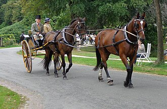 |
| paddy wagon复合词le panier à saladen.m.🇬🇧 paddy wagon | /'pædi 'wægәn//panje a salad/ | 警车,囚车 | van used by police to transport prisoners | 3.44 |  |
| trolley coach复合词le trolleyn.m.🇬🇧 trolley coach | /'trɒli kәutʃ//tʁɔlɛ/ | un. 无轨电车 | a passenger bus with an electric motor that draws power from overhead wires | 3.43 | 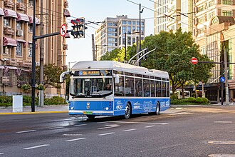 |
| gypsy cab复合词la cabinen.f.🇬🇧 gypsy cab | /ˈdʒɪpsi: kæb//kabin/ | <美俚>一种出租汽车（只能停在雇车场出租, 不能沿街兜揽生意） | a taxicab that cruises for customers although it is licensed only to respond to calls | 3.4 | 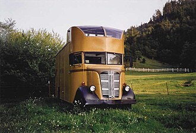 |
| coupele coupén.m.🇬🇧 coupe | /'ku:pei//kupe/ | n. 双座四轮轿式马车, 小轿车, 双门轿式小汽车, (英)铁路客车尾部的分隔车厢 | a car with two doors and front seats and a luggage compartment | 3.34 | 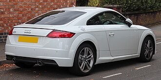 |
| police car复合词l'auton.m.🇬🇧 police car | /pә'li:s kɑ://oto/ | [法] 警察巡逻车 | a car in which policemen cruise the streets; equipped with radiotelephonic communications to headquarters | 3.32 |  |
| station wagon复合词le breakn.m.🇬🇧 station wagon | /'steiʃәn 'wægәn//bʁɛk/ | 旅行汽车,小型客车,客货两用车 | a car that has a long body and rear door with space behind rear seat | 3.32 | 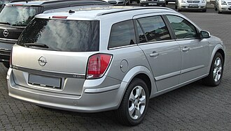 |
| dump truck复合词le tombereaun.m.pl. tombereaux🇬🇧 dump truck | /dʌmp trʌk//tɔ̃bʁo/ | 自动倾卸卡车；[化] 倾卸汽车 | truck whose contents can be emptied without handling; the front end of the platform can be pneumatically raised so that the load is discharged by gravity | 3.24 | 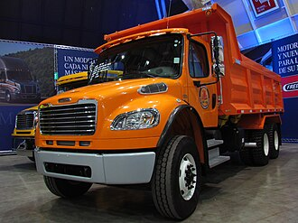 |
| hot rod复合词le hot rodn.m.🇬🇧 hot rod | /hɔt rɔd//ʼɔt ʁo/ | n. 旧车改装的高速汽车 | a car modified to increase its speed and acceleration | 3.24 | 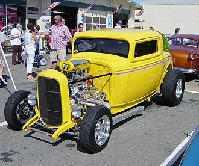 |
| sports car复合词la voiture de sportn.f.🇬🇧 sports car | /spɔ:ts kɑ://vwatyʁ də spɔʁ/ | 跑车 | a small low car with a high-powered engine; usually seats two persons | 3.24 |  |
| squad car复合词l'auton.m.🇬🇧 squad car | /skwɒd kɑ://oto/ | 巡逻警车 | a car in which policemen cruise the streets; equipped with radiotelephonic communications to headquarters | 3.24 |  |
| marsh buggy复合词le marsh buggyn.m.🇬🇧 marsh buggy | /mɑ:ʃ ˈbʌgi://maʁ bygi/ | 沼泽地用汽车 | an amphibious vehicle typically having four-wheel drive and a raised body | 3.21 |  |
| automotive vehicle复合词la véhicule à moteurn.f.🇬🇧 automotive vehicle | /ˌɔ:təˈməutiv ˈvi:ɪkl//veikyl a mɔtœʁ/ | 自动车（一种机动车辆）; 机动车 | a self-propelled wheeled vehicle that does not run on rails | 3.2 |  |
| beach wagon复合词le breakn.m.🇬🇧 beach wagon | /bi:tʃ ˈwæɡən//bʁɛk/ | n. 旅行车; 客货两用汽车 | a car that has a long body and rear door with space behind rear seat | 3.2 |  |
| black maria复合词le panier à saladen.m.🇬🇧 black maria | /blæk mә:'raiә, mә'riә//panje a salad/ | [法] 黑点, 运囚犯的汽车 | van used by police to transport prisoners | 3.2 | 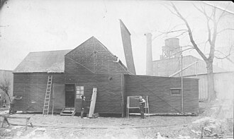 |
| compact car复合词le compactn.m.🇬🇧 compact car | /kəmˈpækt kɑ://kɔ̃pakt/ | n. 小型汽车 | a small and economical car | 3.2 | 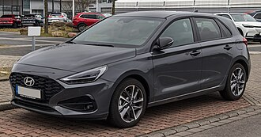 |
| delivery truck复合词la livraisonn.f.🇬🇧 delivery truck | /di'livәri trʌk//livʁɛzɔ̃/ | [经] 运货车, 运货卡车 | a van suitable for delivering goods or services to customers | 3.2 | 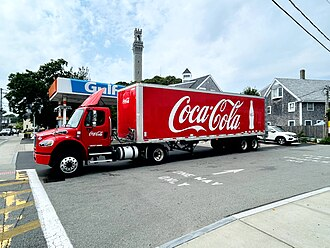 |
| delivery van复合词l'avant-garden.m.🇬🇧 delivery van | /diˈlivəri væn//avɑ̃gaʁd/ | 厢式送货车，送货车 | a van suitable for delivering goods or services to customers | 3.2 | 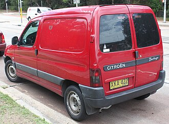 |
| dirt bike复合词la moton.f.🇬🇧 dirt bike | /də:t baik//mɔto/ | n. 野外泥土地比赛用的（轻型）摩托车; （通常不在大街上骑的）小型摩托车 | a lightweight motorcycle equipped with rugged tires and suspension; an off-road motorcycle designed for riding cross country or over unpaved ground | 3.2 | 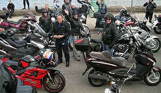 |
| electric automobile复合词la voiture électriquen.f.🇬🇧 electric automobile | /iˈlektrik ˈɔ:təməbi:l//vwatyʁ elɛktʁik/ | 电动汽车 | a car that is powered by electricity | 3.2 |  |
| electric car复合词la voiture électriquen.f.🇬🇧 electric car | /i'lektik kɑ://vwatyʁ elɛktʁik/ | 电车 | a car that is powered by electricity | 3.2 | 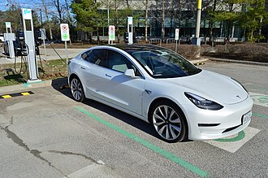 |
| estate car复合词le breakn.m.🇬🇧 estate car | /isˈteit kɑ://bʁɛk/ | n. 旅行车 | a car that has a long body and rear door with space behind rear seat | 3.2 |  |
| fire engine复合词le camion d'incendien.m.🇬🇧 fire engine | /'faiә 'endʒin//kamjɔ̃ dɛ̃sɑ̃di/ | 消防车；[法] 救火车, 消防车 | any of various large trucks that carry firemen and equipment to the site of a fire | 3.2 |  |
| fire truck复合词le camion d'incendien.m.🇬🇧 fire truck | /ˈfaiə trʌk//kamjɔ̃ dɛ̃sɑ̃di/ | n. 救火车 | any of various large trucks that carry firemen and equipment to the site of a fire | 3.2 |  |
| garbage truck复合词le camion poubellen.m.🇬🇧 garbage truck | /'gɑ:bidʒ trʌk//kamjɔ̃ pubɛl/ | n. 垃圾车 | a truck for collecting domestic refuse | 3.2 | 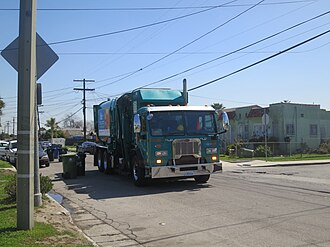 |
| golf cart复合词la golfetten.f.🇬🇧 golf cart | /ɡɔlf kɑ:t//ɡolf/ | n. 高尔夫球车 | a small motor vehicle in which golfers can ride between shots | 3.2 | 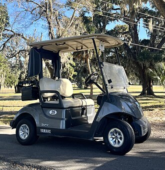 |
| ladder truck复合词le fourgon d'incendien.m.🇬🇧 ladder truck | /'lædә trʌk//fuʁgɔ̃ dɛ̃sɑ̃di/ | 云梯消防车 | a fire engine carrying ladders | 3.2 | 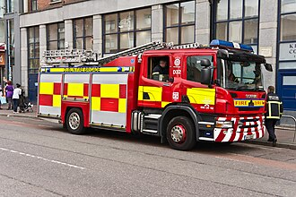 |
| limousinela limousinen.f.🇬🇧 limousine | /'limәzi:n//limuzin/ | n. 轿车 | large luxurious car; usually driven by a chauffeur | 3.2 | 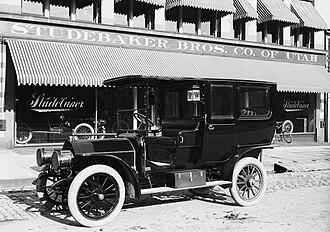 |
| milk float复合词le flottern.m.🇬🇧 milk float | /milk fləut//flɔte/ | n. 送牛奶的马车 | a van (typically powered by electricity) with an open side that is used to deliver milk to houses | 3.2 | 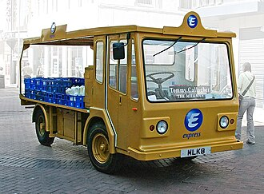 |
| motor vehicle复合词la véhicule à moteurn.f.🇬🇧 motor vehicle | /'mәutә 'vi:ikl//veikyl a mɔtœʁ/ | [化] 机动车辆 | a self-propelled wheeled vehicle that does not run on rails | 3.2 | 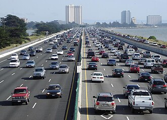 |
| moving van复合词l'avant-garden.m.🇬🇧 moving van | /ˈmu:vɪŋ væn//avɑ̃gaʁd/ | 搬家卡车 | a van used for moving home or office furniture | 3.2 | 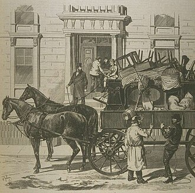 |
| pace car复合词la voiture de sécuritén.f.🇬🇧 pace car | /peis kɑ://vwatyʁ də sekyʁite/ | 开路车 | a high-performance car that leads a parade of competing cars through the pace lap and then pulls off the course | 3.2 | |
| panel truck复合词le camionn.m.🇬🇧 panel truck | /'pænl trʌk//kamjɔ̃/ | 厢式小货车 | a van suitable for delivering goods or services to customers | 3.2 | 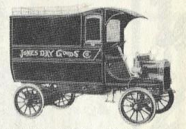 |
| passenger vehicle复合词l'autobusn.m.🇬🇧 passenger vehicle | /ˈpæsindʒə ˈvi:ɪkl//otɔbys/ | 客车 | a vehicle carrying many passengers; used for public transport | 3.2 |  |
| patrol car复合词la véhicule de policen.f.🇬🇧 patrol car | /pəˈtrəul kɑ://veikyl də pɔlis/ | n. 警察巡逻车 | a car in which policemen cruise the streets; equipped with radiotelephonic communications to headquarters | 3.2 | |
| police van复合词le panier à saladen.m.🇬🇧 police van | /pә'li:s væn//panje a salad/ | n. 厢式警车 | van used by police to transport prisoners | 3.2 |  |
| police wagon复合词le panier à saladen.m.🇬🇧 police wagon | /pә'li:s 'wægәn//panje a salad/ | [法] 警车 | van used by police to transport prisoners | 3.2 |  |
| race car复合词la voiture de coursen.f.🇬🇧 race car | /reis kɑ://vwatyʁ də kuʁs/ | 赛车,比赛用的汽车 | a fast car that competes in races | 3.2 |  |
| racing car复合词la voiture de coursen.f.🇬🇧 racing car | /'reisiŋ kɑ://vwatyʁ də kuʁs/ | 赛车 | a fast car that competes in races | 3.2 | 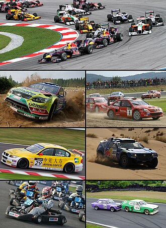 |
| school bus复合词l'autobus scolairen.m.🇬🇧 school bus | /sku:l bʌs//otɔbys skɔlɛʁ/ | 校车 | a bus used to transport children to or from school | 3.2 | 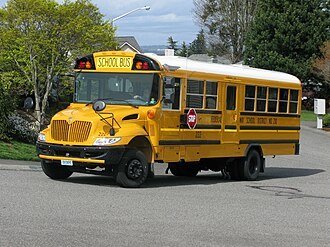 |
| shooting brake复合词le break de chassen.m.🇬🇧 shooting brake | /'ʃu:tiŋ breik//bʁɛk də ʃas/ | 小型载货汽车,客货两用车 | another name for a station wagon | 3.2 | 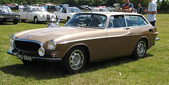 |
| sound truck复合词le camionn.m.🇬🇧 sound truck | /saund trʌk//kamjɔ̃/ | 宣传车 | a truck equipped with a loudspeaker and used for advertising | 3.2 | 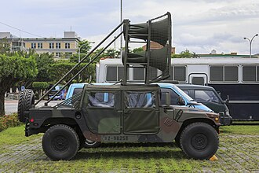 |
| sport car复合词la voiture de sportn.f.🇬🇧 sport car | /spɔ:t kɑ://vwatyʁ də spɔʁ/ | 比赛用汽车, 双座轻型汽车 | a small low car with a high-powered engine; usually seats two persons | 3.2 | 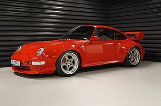 |
| stock car复合词le stock-carn.m.🇬🇧 stock car | /stɔk kɑ://stɔkkaʁ/ | n. 运牲口的火车车辆 | a car kept in dealers' stock for regular sales | 3.2 | |
| swamp buggy复合词le swamp buggyn.m.🇬🇧 swamp buggy | /swɔmp ˈbʌgi://swɑ̃ bygi/ | 沼泽车 | an amphibious vehicle typically having four-wheel drive and a raised body | 3.2 | 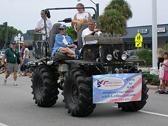 |
| tip truck复合词le tombereaun.m.pl. tombereaux🇬🇧 tip truck | /tip trʌk//tɔ̃bʁo/ | 翻斗卡车 | truck whose contents can be emptied without handling; the front end of the platform can be pneumatically raised so that the load is discharged by gravity | 3.2 |  |
| touring car复合词la voiture de tourismen.f.🇬🇧 touring car | /ˈtuəriŋ kɑ://vwatyʁ də tuʁism/ | 游览汽车; 旅游车 | large open car seating four with folding top | 3.2 | 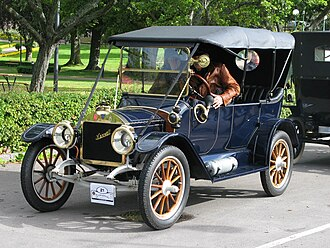 |
| trail bike复合词le types de motosn.m.🇬🇧 trail bike | /treil baik//tip də mɔto/ | (适于在崎岖道路驾驶的)轻型摩託车 | a lightweight motorcycle equipped with rugged tires and suspension; an off-road motorcycle designed for riding cross country or over unpaved ground | 3.2 |  |
| trailer truck复合词la véhicule articulén.f.🇬🇧 trailer truck | /ˈtreɪlə trʌk//veikyl aʁtikyle/ | n. 拖车 | a truck consisting of a tractor and trailer together | 3.2 | 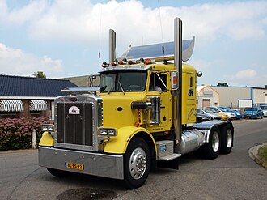 |
| car transporter复合词le car transportern.m.🇬🇧 car transporter | /kɑ: trænˈspɔːtə(r)//kaʁ tʁɑ̃spɔʁte/ | 车辆运输车 | a long truck for carrying motor vehicles | 3.19 | 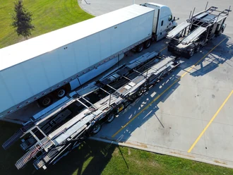 |
| motorbikela moton.f.🇬🇧 motorbike | /'mәjtәbaik//mɔto/ | n. 机动脚踏两用车, 摩托车 | small motorcycle with a low frame and small wheels and elevated handlebars | 3.19 | 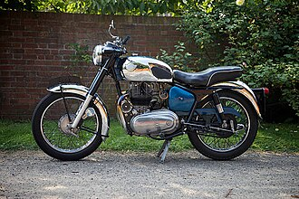 |
| transporterle transporteurn.m.🇬🇧 transporter | /træns'pɒ:tә//lə tʁɑ̃spɔʁtœʁ/ | n. 输送人, 运输机 | a long truck for carrying motor vehicles | 3.19 | 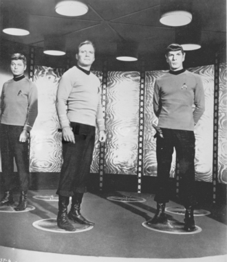 |
| minivanla monospacen.f.🇬🇧 minivan | /'minivæn//monospa/ | n. 小型货车 | a small box-shaped passenger van; usually has removable seats; used as a family car | 3.06 | 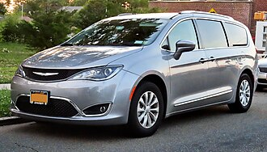 |
| amphibious vehicle复合词l'amphibien.f.🇬🇧 amphibious vehicle | /æmˈfɪbi:əs ˈvi:ɪkl//ɑ̃fibi/ | 水陆两用车 | a flat-bottomed motor vehicle that can travel on land or water | 3.05 |  |
| articulated lorry复合词le camionn.m.🇬🇧 articulated lorry | /ɑ:ˈtikjulitid ˈlɔri//kamjɔ̃/ | n. <英>拖车 | a truck consisting of a tractor and trailer together | 2.99 |  |
| hatchbackle hayonn.m.🇬🇧 hatchback | /'hætʃ'bæk//ʼajɔ̃/ | n. 有向上打开的后门的汽车 | a car having a hatchback door | 2.98 | 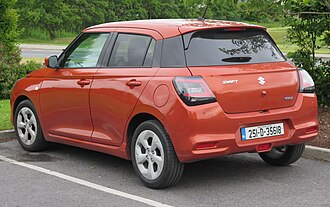 |
| roadsterle runaboutn.m.🇬🇧 roadster | /'rәudstә//ʁynaby/ | n. 敞篷小客车, 流浪者 | an open automobile having a front seat and a rumble seat | 2.84 | 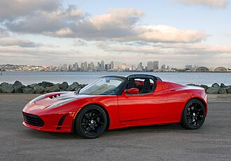 |
| hearsele corbillardn.m.🇬🇧 hearse | /hә:s//kɔʁbijaʁ/ | n. 灵车 | a vehicle for carrying a coffin to a church or a cemetery; formerly drawn by horses but now usually a motor vehicle | 2.8 | |
| mopedle cyclomoteurn.m.🇬🇧 moped | /'mәuped//siklɔmɔtœʁ/ | n. 助动车 | a motorbike that can be pedaled or driven by a low-powered gasoline engine | 2.78 | 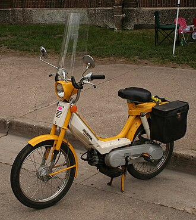 |
| minibusle minibusn.m.🇬🇧 minibus | /'minibʌs//minibys/ | n. 中客车, 小型公共汽车 | a light bus (4 to 10 passengers) | 2.75 | 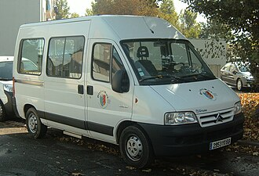 |
| amphibian兼类词l'amphibien.f.🇬🇧 amphibian | /æm'fibiәn//ɑ̃fibi/ | n. 两栖动物, 水旱两生植物, 水陆两用飞机 | a flat-bottomed motor vehicle that can travel on land or water | 2.72 |  |
| taxicabla fiacren.f.🇬🇧 taxicab | /'tæksikæb//fjakʁ/ | n. 出租车 | a car driven by a person whose job is to take passengers where they want to go in exchange for money | 2.6 |  |